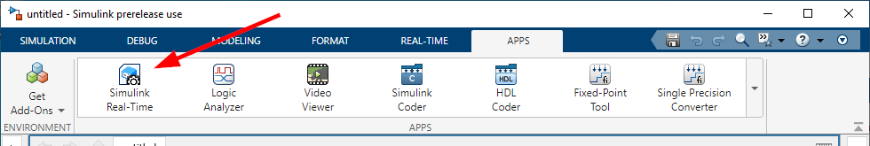
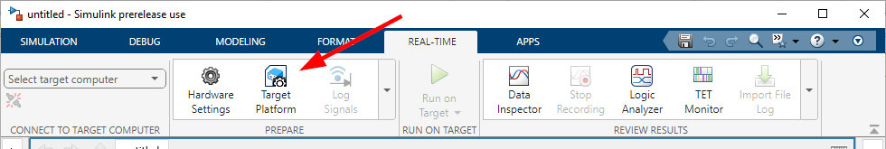
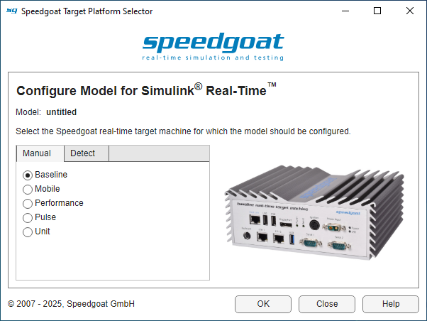
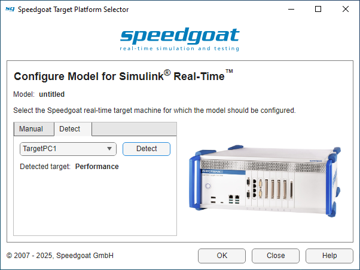
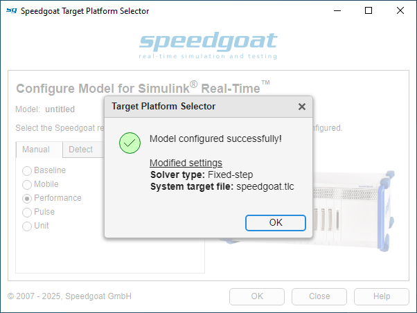

Speedgoat Tools
Speedgoat Tools — Speedgoat Target Platform Selector
How to Configure a Model for Speedgoat Real-Time Target Machines
![[Note]](images/note.png) | Note |
|---|---|
The information on this page applies to MATLAB R2024a and later. |
To run a Simulink model on a Speedgoat real-time target machine, you need to configure the model correctly for Simulink Real-Time. This can be done in multiple ways:
Using the Target Platform Selector app
Using the
slrealtime.TargetobjectApplying the changes directly in the Model Settings
Using the Target Platform Selector
The Target Platform Selector is a GUI application that you can use to configure your Simulink model for the target platform (i.e., the Speedgoat real-time target machine).
You can open the Target Platform Selector by selecting Simulink Real-Time in the APPS tab or Target Platform in the REAL-TIME tab.


Once the GUI is open, select the Speedgoat real-time target machine for which you want to configure your model. The different target machines are displayed on the right.

Alternatively, you can let the application detect which Speedgoat real-time target machine you are running. To do this, you must already have a target defined and be able to connect to it. Switch to the Detect tab, select your target and press the Detect button. The application will then communicate with the target machine, which may take a few seconds to complete. The target detected is indicated below next to Detected target and with an image.

Once you have selected a target machine in the Manual tab or detected one in the Detect tab, you can then configure the Simulink model by clicking OK. A pop-up will inform you which model settings have been changed. Press OK to close the window.

Your model is now configured for Simulink Real-Time and ready to use!
Using the slrealtime.Target Object
You can configure your model for the target platform by calling the
configureModelForTargetPlatform function from the
slrealtime.Target object.
Example:
tg = slrealtime();
tg.configureModelForTargetPlatform('myModel')This function needs to access your Speedgoat real-time target machine and may fail if no connection can be established.
For more information, refer to the MathWorks Simulink Real-Time help documentation.
Applying Changes in the Model Settings
The simplest way to configure your model would be to use the Target Platform Selector; however, you can also go to the model settings and make the changes manually:
In Simulink, go to the MODELING tab and click Model Settings
Under Solver → Solver selection, set Type to Fixed-step
Under Code Generation → Target selection, set System target file to the correct value as listed below:
| MATLAB Release | System Target File | |
|---|---|---|
| Baseline, Mobile, Performance, Unit | Pulse | |
| R2023b and earlier | slrealtime.tlc | - |
| R2024a, R2024b | speedgoat.tlc | - |
| R2025a and later | speedgoat.tlc | speedgoat_aarch64.tlc |
Additional valid system target file options may become available in the future.